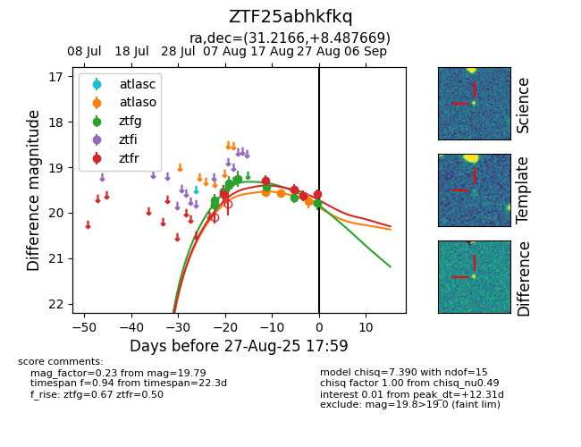

Target ZTF25abhkfkq at 2025-08-26 10:53, see:
FINK: fink-portal.org/ZTF25abhkfkq
Lasair: lasair-ztf.lsst.ac.uk/objects/ZTF25abhkfkq
ALeRCE: alerce.online/object/ZTF25abhkfkq
alt names
ZTF25abhkfkq (ztf,fink)
coordinates:
equatorial (ra, dec) = (31.2166,+8.48767)
galactic (l, b) = (152.0422,-50.18763)
photometry
last atlaso=19.74, ztfg=19.66, ztfr=19.63
3 atlaso, 9 ztfg, 4 ztfr detections
